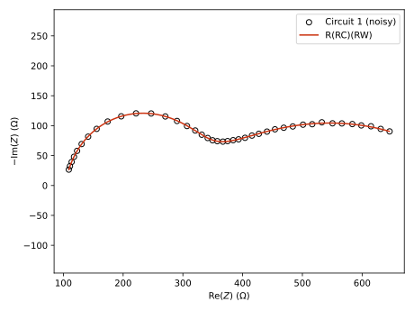
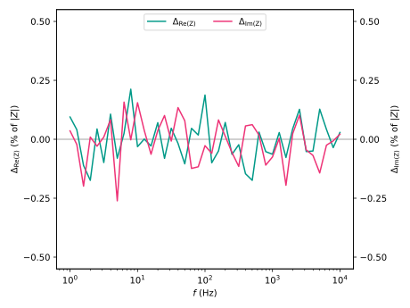
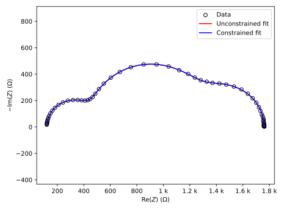
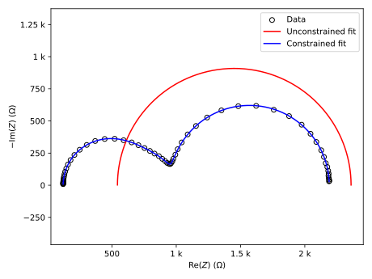
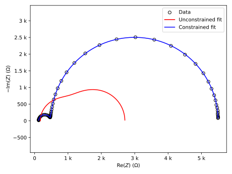

Circuit fitting
Equivalent circuit fitting is a very common way of analyzing impedance spectra. The aim is to extract quantitative information regarding physical characteristics by modeling a system using an equivalent circuit where each element corresponds to some aspect of the system that is being investigated (solution resistance, double-layer capacitance, cable inductance, etc.). Each element in the circuit has a known expression for its impedance and so does the resulting circuit.
Note
Impedance spectra should be validated using, e.g., Kramers-Kronig tests prior to proceeding with circuit fitting. The instrument control software for your potentiostat/galvanostat may include tools for analyzing the excitation and response signals for indications of non-linear behavior.
Performing a fit
The fit_circuit() function performs the fitting and returns a FitResult object.
>>> from pyimpspec import (
... Circuit,
... DataSet,
... FitResult,
... fit_circuit,
... parse_cdc,
... generate_mock_data,
... )
>>>
>>> data: DataSet = generate_mock_data("CIRCUIT_1", noise=0.1, seed=42)[0]
>>> circuit: Circuit = parse_cdc("R(RC)(RW)")
>>> fit: FitResult = fit_circuit(circuit, data)
fit_circuit() tries various combinations of iteration methods and weights by default to achieve the best fit.
It may still be necessary to adjust the initial values and/or the limits of the various parameters of the circuit elements.
The FitResult object contains, e.g., the fitted Circuit object and the lmfit.MinimizerResult.
The two figures below show the impedance spectrum and the fitted circuit as a Nyquist plot, and the residuals of the fit, respectively.


Generating tables and diagrams
FitResult objects have methods that generate pandas.DataFrame objects, which can in turn be used to generate, e.g., Markdown or LaTeX tables (pandas.DataFrame.to_markdown or pandas.DataFrame.to_latex, respectively).
Thus, it is quite easy to generate a table containing the fitted parameter values or the statistics related to the fit.
Circuit objects have methods for generating circuit diagrams either in the form of a string containing CircuiTikZ-compatible commands or as a schemdraw.Drawing object.
>>> from schemdraw import Drawing
>>> from pandas import DataFrame
>>> from pyimpspec import (
... Circuit,
... DataSet,
... FitResult,
... fit_circuit,
... generate_mock_data,
... )
>>>
>>> data: DataSet = generate_mock_data("CIRCUIT_1", noise=0.1, seed=42)[0]
>>> circuit: Circuit = parse_cdc("R(RC)(RW)")
>>> fit: FitResult = fit_circuit(circuit, data)
>>>
>>> fit.circuit.to_sympy()
R_0 + 1/(2*I*pi*C_2*f + 1/R_1) + 1/(Y_4*(2*I*pi*f)**n_4 + 1/R_3)
>>>
>>> drawing: Drawing = fit.circuit.to_drawing()
>>>
>>> df: DataFrame = fit.to_parameters_dataframe()
>>> parameters: str = df.to_markdown(index=False)
>>>
>>> df = fit.to_statistics_dataframe()
>>> statistics: str = df.to_markdown(index=False)
The circuit diagram would look like this:
The contents of parameters and statistics in the example above would be along the lines of:
| Element | Parameter | Value | Std. err. (%) | Unit | Fixed |
|:----------|:------------|--------------:|----------------:|:-------|:--------|
| R_1 | R | 100.019 | 0.0510552 | ohm | No |
| R_2 | R | 199.805 | 0.0792938 | ohm | No |
| C_1 | C | 7.99849e-07 | 0.0882405 | F | No |
| R_3 | R | 500.029 | 0.117923 | ohm | No |
| W_1 | Y | 0.00039991 | 0.198213 | S*s^n | No |
| W_1 | n | 0.5 | nan | | Yes |
| Label | Value |
|:-------------------------------|:--------------------|
| Log pseudo chi-squared | -4.160334813189715 |
| Log residual sum of squares | 1.122377404804515 |
| Akaike info. criterion | -139.43268083233875 |
| Bayesian info. criterion | -127.39908459601747 |
| Degrees of freedom | 77 |
| Number of data points | 82 |
| Number of function evaluations | 204 |
| Method | least_squares |
| Weight | boukamp |
Note
It may not always be possible to estimate errors for fitted parameters. Common causes include:
A parameter’s fitted value is close to the parameter’s lower or upper limit.
An inappropriate equivalent circuit has been chosen.
The maximum number of function evaluations is set too low.
The data contains no noise and the equivalent circuit is very good at reproducing the data.
Note
As was mentioned in Equivalent circuits, circuit elements and their variables are by default represented in different ways in SymPy expressions compared to circuit drawings and in this case also tables of fitted parameters.
Calling fit.to_parameters_dataframe with running=True can be done to have the same running count as in the SymPy expression of the fitted circuit.
>>> from schemdraw import Drawing
>>> from pandas import DataFrame
>>> from pyimpspec import (
... Circuit,
... DataSet,
... FitResult,
... fit_circuit,
... generate_mock_data,
... )
>>>
>>> data: DataSet = generate_mock_data("CIRCUIT_1", noise=5e-2, seed=42)[0]
>>> circuit: Circuit = parse_cdc("R(RC)(RW)")
>>> fit: FitResult = fit_circuit(circuit, data)
>>>
>>> fit.circuit.to_sympy()
R_0 + 1/(2*I*pi*C_2*f + 1/R_1) + 1/(Y_4*(2*I*pi*f)**n_4 + 1/R_3)
>>>
>>> drawing: Drawing = fit.circuit.to_drawing(running=True)
>>>
>>> df: DataFrame = fit.to_parameters_dataframe(running=True)
>>> parameters: str = df.to_markdown(index=False)
| Element | Parameter | Value | Std. err. (%) | Unit | Fixed |
|:----------|:------------|--------------:|----------------:|:-------|:--------|
| R_0 | R | 100.009 | 0.0272264 | ohm | No |
| R_1 | R | 199.904 | 0.0760636 | ohm | No |
| C_2 | C | 7.99918e-07 | 0.453359 | F | No |
| R_3 | R | 500.016 | 0.0796571 | ohm | No |
| W_4 | Y | 0.000399959 | 0.187019 | S*s^n | No |
| W_4 | n | 0.5 | nan | | Yes |
Using mathematical constraints
It is possible to make use of lmfit’s support for mathemical constraints.
For example, let’s say that we have a series of impedance spectra that we wish to analyze using the same equivalent circuit model where there are three repeating (RC) units that should correspond to the high-, mid-, and low-frequency ranges.
Fitting this circuit to the first impedance spectrum yields a good fit but the fitted parameters of the (RC) units do not correspond to the expected order.
The time constants of the high-, mid-, and low-frequency (RC) units should have the following trend: \(\tau_{\rm hf} < \tau_{\rm mf} < \tau_{\rm lf}\).
However, this is not the case since \(\tau_{\rm hf} \approx 10^{-3.1}\ {\rm s}\), \(\tau_{\rm mf} \approx 10^{-4.5}\ {\rm s}\), and \(\tau_{\rm lf} \approx 10^{-2.0}\ {\rm s}\).
We could set the initial values to coax the (RC) units into the desired order.
Or we could programmatically rearrange and label the (RC) units ourselves after the fit.
Alternatively, we could use constraints.
In the following example, we express the mid-frequency resistance as \(R_{\rm mf} = 10^\alpha \times R_{\rm hf} C_{\rm hf} / C_{\rm mf}\) where \(\alpha \geq 0\).
Similarly, the low-frequency resistance is expressed as \(R_{\rm lf} = 10^\beta \times R_{\rm mf} C_{\rm mf} / C_{\rm lf}\) where \(\beta \geq 0\).
To accomplish this, we need to provide the fit_circuit() function with two additional arguments: constraint_expressions and constraint_variables.
The constraint_expressions argument maps the names/identifiers, which are provided to lmfit during the fitting process, of the constrained parameters to strings that contain the expressions that define the constraints.
The generate_fit_identifiers() function can be used to obtain the names/identifiers of an element’s parameters that will be available within the context where the constraint expressions are parsed and evaluated by lmfit.
See lmfit’s documentation about constraints for information about operators, functions, and constants that are available for use in expressions.
>>> from typing import Dict
>>> from pyimpspec import (
... Circuit,
... DataSet,
... Element,
... FitIdentifiers,
... FitResult,
... fit_circuit,
... generate_fit_identifiers,
... generate_mock_data,
... parse_cdc,
... )
>>> data: DataSet = generate_mock_data(
... "R{R=120}(R{R=330}C{C=1e-7})(R{R=840}C{C=1e-6})(R{R=470}C{C=2e-5})",
... noise=0.1,
... seed=42,
... )[0]
>>> circuit: Circuit = parse_cdc("R{:ser}(R{:hf}C{:hf})(R{:mf}C{:mf})(R{:lf}C{:lf})")
>>> identifiers: Dict[Element, FitIdentifiers] = generate_fit_identifiers(circuit)
>>> elements: List[Element] = circuit.get_elements()
>>> R_ser, R_hf, C_hf, R_mf, C_mf, R_lf, C_lf = elements
>>> constraint_expressions = {
... identifiers[R_mf].R: f"{identifiers[R_hf].R} * {identifiers[C_hf].C} / {identifiers[C_mf].C} * 10**alpha",
... identifiers[R_lf].R: f"{identifiers[R_mf].R} * {identifiers[C_mf].C} / {identifiers[C_lf].C} * 10**beta",
... }
>>> constraint_variables=dict(
... alpha=dict(
... value=0.3,
... min=0.0,
... max=6.0,
... ),
... beta=dict(
... value=0.8,
... min=0.0,
... max=6.0,
... ),
... )
>>> constrained_fit: FitResult = fit_circuit(
... circuit,
... data,
... method="least_squares",
... weight="boukamp",
... constraint_expressions=constraint_expressions,
... constraint_variables=constraint_variables,
... )
The constraint_variables argument can be used to define any additional variables that would be used by the constraint expressions.
See lmfit’s documentation about Parameters for information about valid keyword arguments.

Example data based on a R(RC)(RC)(RC) circuit (\(R_{\rm ser} = 120\ \Omega\), \(R_1 = 120\ \Omega\), \(R_2 = 840\ \Omega\), \(R_3 = 470\ \Omega\), \(C_1 = 10^{-7}\ {\rm F}\), \(C_2 = 10^{-6}\ {\rm F}\), and \(C_3 = 2 \times 10^{-5}\ {\rm F}\)).
# Unconstrained fit
| Element | Parameter | Value | Std. err. (%) | Unit | Fixed |
|:----------|:------------|--------------:|----------------:|:-------|:--------|
| R_ser | R | 120.068 | 0.0341837 | ohm | No |
| R_hf | R | 839.927 | 0.0858873 | ohm | No |
| C_hf | C | 1.00036e-06 | 0.0902275 | F | No |
| R_mf | R | 329.879 | 0.0573161 | ohm | No |
| C_mf | C | 1.0016e-07 | 0.0643597 | F | No |
| R_lf | R | 470.144 | 0.165151 | ohm | No |
| C_lf | C | 2.00307e-05 | 0.421995 | F | No |
| Label | Value |
|:-------------------------------|:--------------------|
| Log pseudo chi-squared | -4.0181241766056175 |
| Log residual sum of squares | 2.1542156188278123 |
| Akaike info. criterion | 33.06173460550208 |
| Bayesian info. criterion | 52.68988191863488 |
| Degrees of freedom | 115 |
| Number of data points | 122 |
| Number of function evaluations | 121 |
| Method | least_squares |
| Weight | boukamp |
# Constrained fit
| Element | Parameter | Value | Std. err. (%) | Unit | Fixed |
|:----------|:------------|--------------:|----------------:|:-------|:--------|
| R_ser | R | 120.067 | 0.0341366 | ohm | No |
| R_hf | R | 329.879 | 0.0573944 | ohm | No |
| C_hf | C | 1.00159e-07 | 0.0642868 | F | No |
| R_mf | R | 839.928 | nan | ohm | Yes |
| C_mf | C | 1.00035e-06 | 0.0906081 | F | No |
| R_lf | R | 470.143 | nan | ohm | Yes |
| C_lf | C | 2.00307e-05 | 0.422141 | F | No |
| Label | Value |
|:-------------------------------|:-------------------|
| Log pseudo chi-squared | -4.018130204098158 |
| Log residual sum of squares | 2.1542242418625523 |
| Akaike info. criterion | 33.064156948594444 |
| Bayesian info. criterion | 52.692304261727244 |
| Degrees of freedom | 115 |
| Number of data points | 122 |
| Number of function evaluations | 268 |
| Method | least_squares |
| Weight | boukamp |
As shown in the next two examples, the use of constraints can also help to achieve a good fit without first setting the initial values of the circuit elements themselves.
Letting fit_circuit() try different combinations of fitting methods and weights can also achieve a good fit without adjusting the initial values since another combination of method and weight may be able to converge on a solution despite the suboptimal starting conditions.

Example data based on a R(RC)(RC)(RC) circuit (\(R_{\rm ser} = 120\ \Omega\), \(R_1 = 630\ \Omega\), \(R_2 = 210\ \Omega\), \(R_3 = 1230\ \Omega\), \(C_1 = 2 \times 10^{-7}\ {\rm F}\), \(C_2 = 3 \times 10^{-6}\ {\rm F}\), and \(C_3 = 3 \times 10^{-5}\ {\rm F}\)).
# Unconstrained fit
| Element | Parameter | Value | Std. err. (%) | Unit | Fixed |
|:----------|:------------|--------------:|----------------:|:-------|:--------|
| R_ser | R | 542.645 | 7.95262 | ohm | No |
| R_hf | R | 605.744 | 9.41072e+08 | ohm | No |
| C_hf | C | 2.40542e-06 | nan | F | No |
| R_mf | R | 605.744 | 9.69958e+08 | ohm | No |
| C_mf | C | 2.40542e-06 | nan | F | No |
| R_lf | R | 605.744 | 9.91535e+08 | ohm | No |
| C_lf | C | 2.40542e-06 | 9.96185e+08 | F | No |
| Label | Value |
|:-------------------------------|:-------------------|
| Log pseudo chi-squared | 2.1999945597205186 |
| Log residual sum of squares | 7.444795175556683 |
| Akaike info. criterion | 1519.2669083215012 |
| Bayesian info. criterion | 1538.895055634634 |
| Degrees of freedom | 115 |
| Number of data points | 122 |
| Number of function evaluations | 24 |
| Method | least_squares |
| Weight | boukamp |
# Constrained fit
| Element | Parameter | Value | Std. err. (%) | Unit | Fixed |
|:----------|:------------|---------------:|----------------:|:-------|:--------|
| R_ser | R | 120.027 | 0.0282415 | ohm | No |
| R_hf | R | 631.1 | 0.159964 | ohm | No |
| C_hf | C | 2.0004e-07 | 0.0705913 | F | No |
| R_mf | R | 208.633 | nan | ohm | Yes |
| C_mf | C | 3.03483e-06 | 1.02436 | F | No |
| R_lf | R | 1230.15 | nan | ohm | Yes |
| C_lf | C | 2.99872e-05 | 0.100163 | F | No |
| Label | Value |
|:-------------------------------|:-------------------|
| Log pseudo chi-squared | -4.004243214793252 |
| Log residual sum of squares | 2.2191542591185973 |
| Akaike info. criterion | 51.30399750683148 |
| Bayesian info. criterion | 70.93214481996428 |
| Degrees of freedom | 115 |
| Number of data points | 122 |
| Number of function evaluations | 238 |
| Method | least_squares |
| Weight | boukamp |

Example data based on a R(RC)(RC)(RC) circuit (\(R_{\rm ser} = 120\ \Omega\), \(R_1 = 350\ \Omega\), \(R_2 = 30\ \Omega\), \(R_3 = 5000\ \Omega\), \(C_1 = 10^{-7}\ {\rm F}\), \(C_2 = 4 \times 10^{-5}\ {\rm F}\), and \(C_3 = 5 \times 10^{-6}\ {\rm F}\)).
# Unconstrained fit
| Element | Parameter | Value | Std. err. (%) | Unit | Fixed |
|:----------|:------------|--------------:|----------------:|:-------|:--------|
| R_ser | R | 170.914 | 8.43466 | ohm | No |
| R_hf | R | 773.564 | 3.63815e+07 | ohm | No |
| C_hf | C | 2.53744e-05 | 3.60979e+07 | F | No |
| R_mf | R | 856.444 | 3.28609e+07 | ohm | No |
| C_mf | C | 2.31367e-05 | 3.29168e+07 | F | No |
| R_lf | R | 904.411 | 126.29 | ohm | No |
| C_lf | C | 2.78425e-06 | 56.9609 | F | No |
| Label | Value |
|:-------------------------------|:-------------------|
| Log pseudo chi-squared | 1.1844165662788608 |
| Log residual sum of squares | 8.151740593130445 |
| Akaike info. criterion | 1717.8587498895283 |
| Bayesian info. criterion | 1737.486897202661 |
| Degrees of freedom | 115 |
| Number of data points | 122 |
| Number of function evaluations | 119 |
| Method | least_squares |
| Weight | boukamp |
# Constrained fit
| Element | Parameter | Value | Std. err. (%) | Unit | Fixed |
|:----------|:------------|---------------:|----------------:|:-------|:--------|
| R_ser | R | 120.065 | 0.0334348 | ohm | No |
| R_hf | R | 349.867 | 0.0431667 | ohm | No |
| C_hf | C | 1.0015e-07 | 0.0599234 | F | No |
| R_mf | R | 29.7904 | nan | ohm | Yes |
| C_mf | C | 4.02098e-05 | 1.7329 | F | No |
| R_lf | R | 5000.27 | nan | ohm | Yes |
| C_lf | C | 4.99899e-06 | 0.0471055 | F | No |
| Label | Value |
|:-------------------------------|:-------------------|
| Log pseudo chi-squared | -4.016222274015865 |
| Log residual sum of squares | 2.972257409924966 |
| Akaike info. criterion | 262.86225630792967 |
| Bayesian info. criterion | 282.49040362106246 |
| Degrees of freedom | 115 |
| Number of data points | 122 |
| Number of function evaluations | 322 |
| Method | least_squares |
| Weight | boukamp |
Note
Keep in mind that an estimate for the error of a constrained parameter’s value will not be available as indicated by the nan values. However, this can be remedied by using the obtained fitted circuit to perform yet another fit without any constraints.
# Refined fit
| Element | Parameter | Value | Std. err. (%) | Unit | Fixed |
|:----------|:------------|---------------:|----------------:|:-------|:--------|
| R_ser | R | 120.065 | 0.0334741 | ohm | No |
| R_hf | R | 349.867 | 0.0431766 | ohm | No |
| C_hf | C | 1.0015e-07 | 0.0602028 | F | No |
| R_mf | R | 29.7904 | 1.45439 | ohm | No |
| C_mf | C | 4.02098e-05 | 1.73348 | F | No |
| R_lf | R | 5000.27 | 0.0241836 | ohm | No |
| C_lf | C | 4.99899e-06 | 0.0469906 | F | No |
| Label | Value |
|:-------------------------------|:-------------------|
| Log pseudo chi-squared | -4.016222274015865 |
| Log residual sum of squares | 2.972257409924966 |
| Akaike info. criterion | 262.86225630792967 |
| Bayesian info. criterion | 282.49040362106246 |
| Degrees of freedom | 115 |
| Number of data points | 122 |
| Number of function evaluations | 13 |
| Method | least_squares |
| Weight | boukamp |